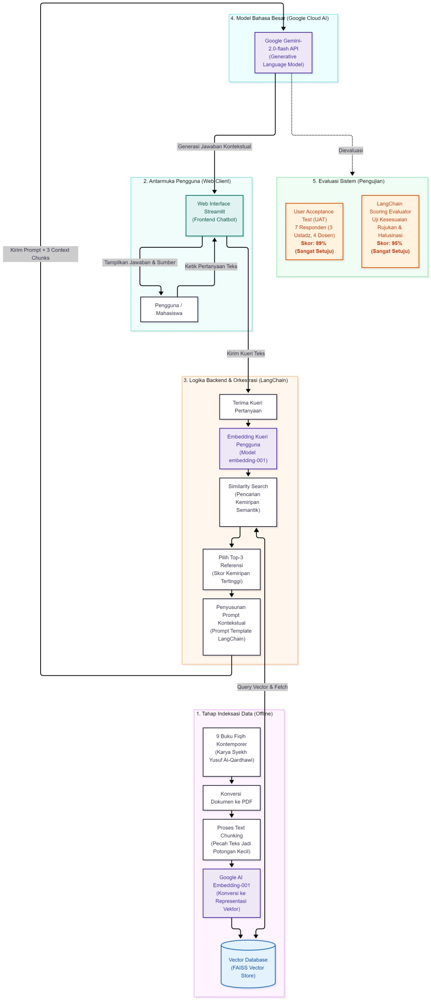

Deskripsi Visualisasi Arsitektur
Diagram ini menggambarkan 5 tahapan utama dalam memproses pertanyaan fiqih dari data mentah hingga menjadi jawaban kontekstual:

Poin Arsitektur:
- Tahap 1 (Indexing Offline): 9 Buku PDF karya Syekh Al-Qardhawi di-chunk dan di-embed dengan model Google
embedding-001lalu disimpan ke Vector DB FAISS. - Tahap 2 & 3 (Web UI & Backend): Antarmuka Streamlit meneruskan kueri pengguna ke LangChain untuk melakukan similarity search (Top-3 context).
- Tahap 4 (Generative Engine): Model
Gemini 2.0 Flashmerangkum jawaban berdasarkan 3 potongan teks rujukan. - Tahap 5 (Evaluasi): Menampilkan hasil pengujian UAT Pakar (89%) dan LangChain Scoring (95%).